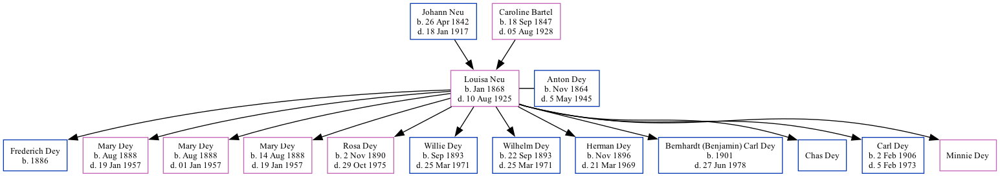

Louisa Juliana Dey (née Neu) 1868 - 1925
[ Home ] | [ Surnames Index ] | [ Family History ]The child of Johann Neu and Caroline Bartel, , Louisa was the great-great-grandmother of Stephanie Hardesty (née Teten), was born in Nebraska in Jan 18681,2,3 and married Anton Dey (with whom she had 12 children: Frederich, Mary, Mary, Mary Catherine, Rosa Johanna, Willie, Wilhelm, Herman, Bernhardt (Benjamin) Carl, Chas, Carl Antone and Minnie) in Seward, Seward County, Nebraska in 18852.
During her life, she was living in Precinct D, Seward, Nebraska, USA in 18801; in D Precinct, Seward, Nebraska in 19002; and in Precinct D, Seward, Nebraska in 19103.
She died on Aug 10, 1925 in York, York County, Nebraska.
Parents
- Johann Peter was born on Apr 26, 1842
- Caroline Eliza was born on Sep 18, 1847
Children
- Frederich was born in 1886
- Mary was born in Aug 1888
- Mary was born in Aug 1888
- Mary Catherine was born on Aug 14, 1888
- Rosa Johanna was born on Nov 2, 1890
- Willie was born in Sep 1893
- Wilhelm was born on Sep 22, 1893
- Herman was born in Nov 1896
- Bernhardt (Benjamin) Carl was born in 1901
- Chas
- Carl Antone was born on Feb 2, 1906
Citations
- 1880 United States Federal Census Ancestry.com Operations Inc (Age: 12; Marital Status: Single; Relation to Head of House: Daughter)
- 1900 United States Federal Census Ancestry.com Operations Inc (Age: 32; Marital Status: Married; Relation to Head of House: Wife)
- 1910 United States Federal Census Ancestry.com Operations Inc (Age in 1910: 42; Marital Status: Married; Relation to Head of House: Wife)
Family Tree
Data (GEDCOM) maintained by Jay Weston Hannah, Omaha, Nebraska, USA.
Website generated by ged2site. Last updated on Jun 18, 2024.